1. Espresso
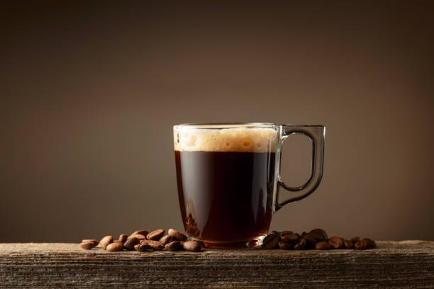
Espresso, ince çekilmiş kahve çekirdeklerinin yüksek basınç altında sıcak suyla demlenmesiyle elde edilen yoğun bir kahve türüdür. Genellikle küçük fincanlarda servis edilir ve güçlü bir aromaya sahiptir.
2. Latte
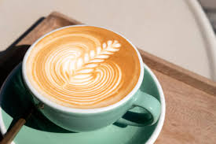
Latte, espresso ve buharda ısıtılmış süt karışımından oluşan bir kahve türüdür. Genellikle üzerine köpük eklenir ve tatlı bir lezzete sahiptir.
3. Cappuccino

Cappuccino, espresso, buharda ısıtılmış süt ve köpüklü süt karışımından oluşan bir kahve türüdür. Genellikle üzerine kakaolu veya karamel sos eklenir.
4. Türk Kahvesi
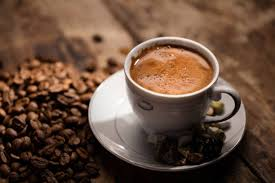
Türk kahvesi, ince çekilmiş kahve çekirdeklerinin suyla demlenmesiyle elde edilen, genellikle küçük fincanlarda servis edilen bir kahve türüdür. Özellikle Türkiye'de popülerdir ve genellikle şekerle/lokumla/çikolatayla servis edilir.
5. Americano

Espresso’nun sıcak su ile seyreltilerek filtre kahve sertliğine yaklaştırılmış halidir.
6. Macchiato
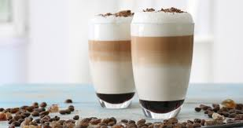
Espresso'nun üzerine sadece bir miktar süt köpüğü eklenerek yapılan sert bir çeşittir.
7. Caffè Mocha

Latte'nin içine çikolata sosu veya tozu eklenerek hazırlanan tatlı bir kahvedir.
8. Ristretto

Ristretto, espresso makinesiyle hazırlanmış, daha az suyla demlenen ve daha yoğun bir lezzete sahip olan bir kahve türüdür.
9. Lungo

Lungo, espresso makinesiyle hazırlanmış, daha fazla suyla demlenen ve daha hafif bir lezzete sahip olan bir kahve türüdür.
10. Long Black

Long Black, sıcak suyun üzerine espresso dökülerek hazırlanan bir kahve türüdür. Genellikle Avustralya ve Yeni Zelanda'da popülerdir; Americano'ya kıyasla kreması daha belirgin kalır.
11. Flat White

Flat White, espresso ve buharda ısıtılmış kadifemsi süt karışımından oluşan bir kahve türüdür.
12. Cortado
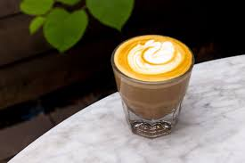
Cortado, espresso ve eşit miktarda buharda ısıtılmış süt karışımından oluşan bir kahve türüdür. Genellikle küçük bardağında servis edilir.
13. Cold Brew
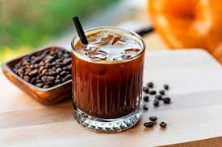
Cold Brew, soğuk suyla uzun sürede demlenen ve daha az asidik bir lezzete sahip olan bir kahve türüdür.
14. Japanese Cold Brew

Sıcak suyla demlenip doğrudan buz üzerine damlatılarak hazırlanan, canlı aromalara sahip soğuk kahve türüdür.
15. Iced Americano
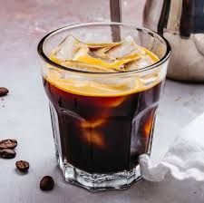
Iced Americano, soğuk su ve buz ile seyreltilmiş espresso'dur.
16. Iced Latte
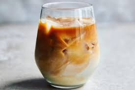
Iced Latte, soğuk süt ve espresso karışımından oluşan ferahlatıcı bir kahve türüdür.
17. V60 (Pour Over)

V60, kahve çekirdeklerinin özel konik kağıt filtreden sıcak suyla yavaşça demlenmesiyle elde edilen, berrak lezzete sahip bir kahve türüdür.
18. Chemex

Chemex, kalın kağıt filtresi sayesinde acı yağları süzerek son derece berrak ve gövdeli bir içim sunan demleme yöntemidir.
19. French Press

French Press, kalın öğütülmüş kahvenin sıcak suda bekletilip metal pistonla süzülmesiyle yapılan yoğun gövdeli bir kahvedir.
20. Aeropress
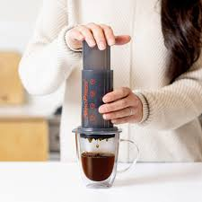
Hava basıncı kullanılarak hızlıca demlenen, zengin aromalı ve pratik bir kahve hazırlama yöntemidir.
21. Moka Pot

Ocak üstünde su buharı basıncıyla demlenen, espressoya yakın sertlikte geleneksel bir İtalyan kahvesidir.
22. Affogato

Bir top vanilyalı dondurmanın üzerine taze çekilmiş sıcak espresso dökülerek hazırlanan tatlı-kahve karışımıdır.
23. Drip Coffee

Drip Coffee, sıcak suyun filtredeki kahve çekirdeklerinden süzülmesiyle elde edilen dengeli bir kahve türüdür.
24. Iced Mocha
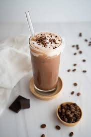
Iced Mocha, soğuk süt, espresso ve çikolata sosunun buzla birleşiminden oluşan tatlı bir soğuk kahvedir.
25. Frappé
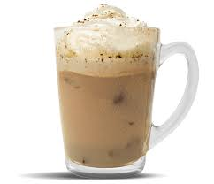
Granül kahve, su, şeker ve buzun çırpılmasıyla hazırlanan, köpüklü Yunan menşeili soğuk kahve türüdür.
26. Cold Drip

Soğuk su damlalarının saatler boyunca kahve yatağından süzülmesiyle elde edilen aromatik ve düşük asiditeli kahvedir.
27. Nitro Cold Brew
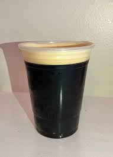
Soğuk demlenmiş kahveye azot (nitrojen) gazı basılarak hazırlanan, fıçı birayı andıran kadifemsi ve kremsi bir içecektir.
28. Espresso Tonic

Buzlu tonik suyunun üzerine eklenen espresso shot ile yapılan, ferahlatıcı ve gazlı bir kahve kokteylidir.
29. Mazagran
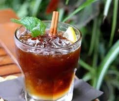
Soğuk espresso, limon suyu ve bazen şeker veya rom eklenerek hazırlanan ferahlatıcı Portekiz usulü kahve.
30. Yemen Mocha

Yemen'in tarihi Mocha bölgesinden gelen, doğal çikolata nüanslarına sahip nadide bir kahve çeşididir.
31. Vietnamese Coffee

Koyu kavrulmuş Robusta çekirdeklerinin 'Phin' filtresinden şekerli yoğunlaştırılmış süt üzerine demlenmesiyle yapılan tatlı ve sert kahvedir.
32. Cuban Coffee (Cafecito)

Espresso demlenirken ilk damlaların esmer şekerle çırpılıp köpürtülmesiyle elde edilen tatlı ve yoğun bir Küba kahvesidir.
33. Café au Lait

Eşit miktarda koyu demlenmiş filtre kahve ve sıcak sütün karıştırılmasıyla hazırlanan Fransız usulü kahve.
34. Café con Leche

Espresso ve buharda ısıtılmış sütün eşit oranlarda karıştırılmasıyla yapılan İspanyol tarzı kahve.
35. Buna (Etiyopya)
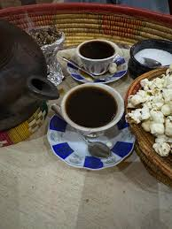
Etiyopya'nın geleneksel toprak çömleğinde (Jebena) demlenen, seremonik değeri yüksek otantik kahve.
36. Vanilla Latte

Espresso ve sıcak süt bileşimine vanilya şurubu eklenerek tatlandırılan popüler bir latte çeşididir.
37. Caramel Latte

Espresso ve sıcak sütün karamel aromasıyla buluştuğu yumuşak içimli tatlı bir kahvedir.
38. Caramel Macchiato
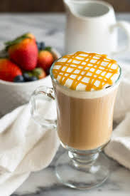
Vanilya şuruplu sıcak süt ve süt köpüğünün üzerine espresso dökülüp karamel sosla süslenmesiyle hazırlanır.
39. Yulaf Sütlü Latte
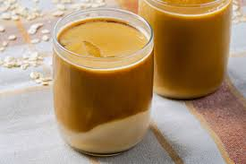
Espresso ve hafif tatlı, kremsi yulaf sütünün birleşiminden oluşan bitki bazlı lezzetli bir kahvedir.
40. Lotus Latte

Lotus Biscoff bisküvisi ve ezmesinin karamelize-tarçınlı aromasını espresso ve sütle buluşturan özel içecek.
41. Iced Salted Caramel Latte

Zengin espresso, tuzlu karamel aroması, soğuk süt ve buzun eşsiz uyumundan oluşan ferahlatıcı içecek.
42. Sütlü Filtre
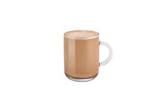
Sert içimli sade filtre kahvenin sıcak veya soğuk sütle dengelenmesiyle hazırlanan yumuşak içimli kahvedir.
43. Dibek Kahvesi
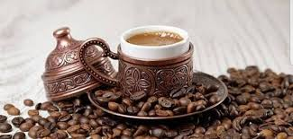
Kahve çekirdeklerinin taş havanlarda dövülerek çeşitli baharat ve aromalarla harmanlandığı yumuşak içimli geleneksel kahve.
44. Menengiç

Çitlembik ağacının meyvelerinden elde edilen, kafeinsiz, sütle pişirildiğinde kremsi ve fıstıksı aroması olan geleneksel içecek.
45. Matcha Latte

Ince öğütülmüş gölge yeşil çay tozunun (Matcha) sıcak suyla çırpılıp buharda ısıtılmış sütle buluşmasıyla hazırlanan antioksidan deposu içecek.
46. Breve
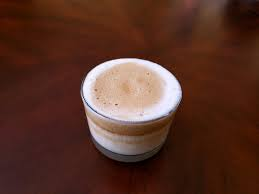
Espresso üzerine süt yerine yarı süt yarı krema köpürtülerek dökülür. Klasik latteye göre oldukça yoğun gövdelidir.
47. Einspänner (Avusturya)
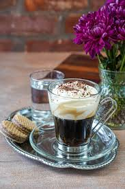
Cam bardakta çift shot espresso üzerine yoğun çırpılmış soğuk krema eklenerek hazırlanan Viyana klasiği.
48. Syphon (Sifon)
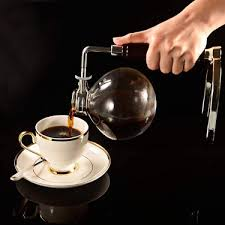
Vakum gücü ve buhar basıncıyla çalışan cam düzenekle demlenen son derece berrak ve çay hafifliğinde bir kahve sunar.
49. Kalita Wave
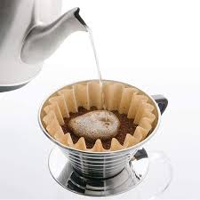
Düz tabanlı 3 delikli dripper ve dalgalı kağıt filtresi sayesinde ısıyı koruyarak dengeli bir ekstraksiyon sağlar.
50. Spanish Latte
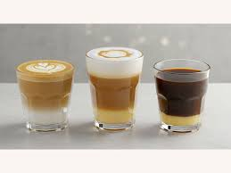
Espresso ve süte ek olarak tabanına şekerli yoğunlaştırılmış süt (condensed milk) eklenen karamelize tat profiline sahip kahvedir.